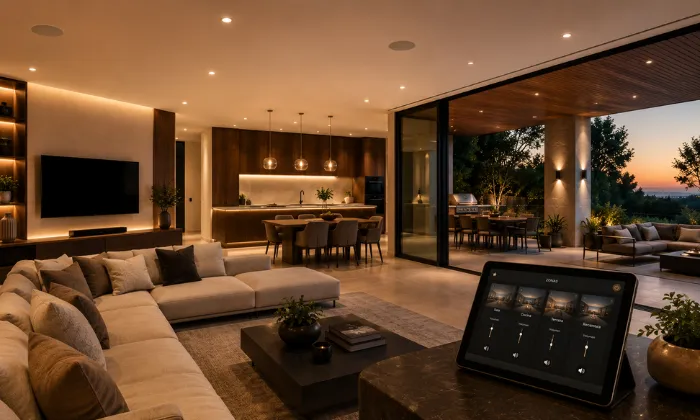
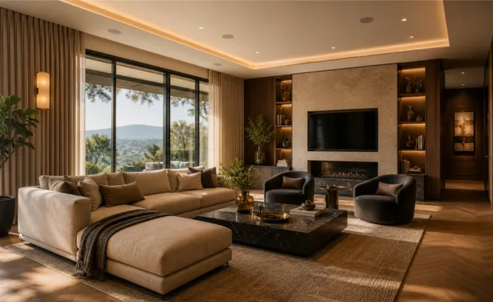
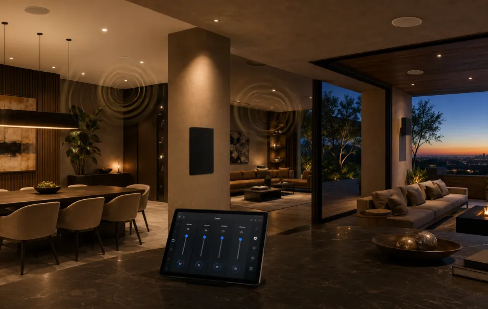
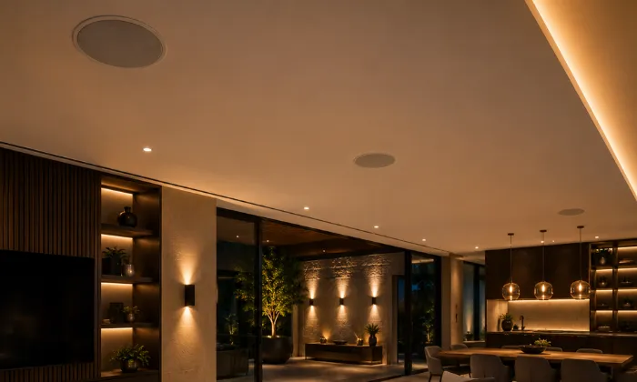
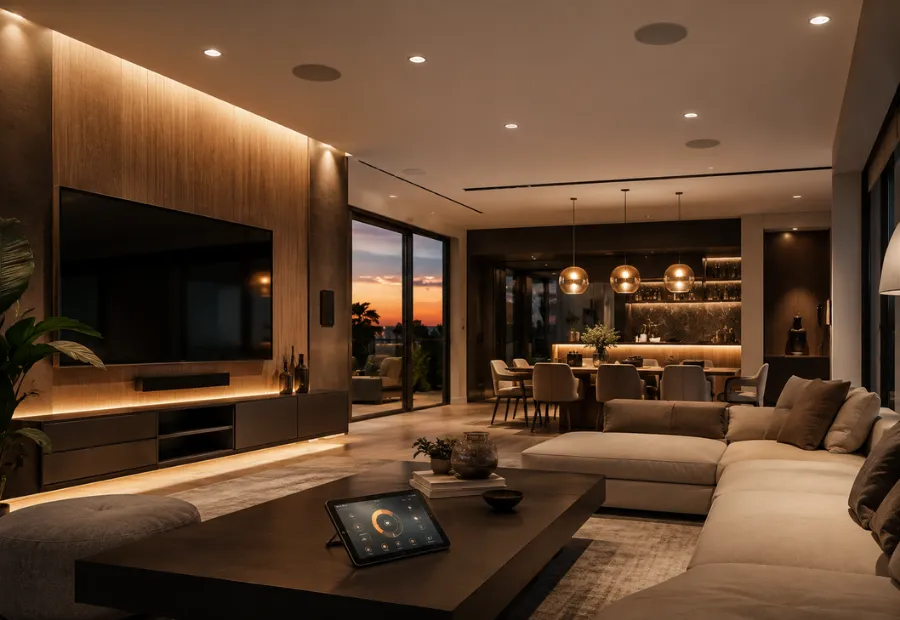
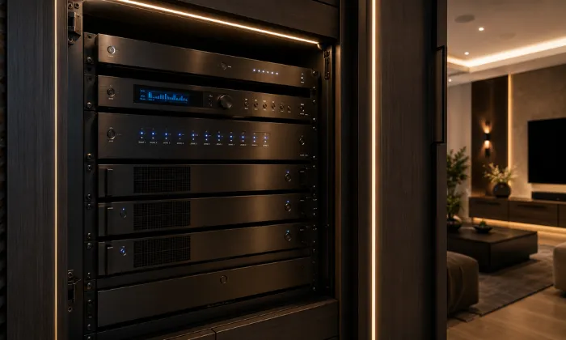

Audio distribuido residencial para disfrutar música en cada zona de tu casa.
Diseñamos e instalamos sistemas de audio distribuido y sonido multiroom
para salas, cocinas, recámaras, terrazas, jardines y áreas sociales.
Integramos
bocinas, amplificación, fuentes de música, cableado y control por zonas para lograr una
experiencia cómoda, estética y fácil de utilizar.
El sonido adecuado en cada zona de tu hogar
DG Audiosound diseña e instala sistemas de audio distribuido residencial —también conocidos como audio multiroom— para viviendas en Ciudad de México, Estado de México y proyectos residenciales en México. Estos sistemas permiten reproducir la misma música en varias áreas o escuchar fuentes distintas según la configuración elegida.
Antes de recomendar equipos analizamos el número de zonas, el uso de cada habitación, la ubicación de las bocinas, las condiciones interiores o exteriores, el cableado disponible y la forma en que la familia desea controlar el sistema.

Ambiente premium
Música equilibrada y agradable para acompañar diferentes momentos del día.
Uso práctico
Control sencillo por zonas y fuentes de música integradas de forma ordenada.
Escalable
Diseño preparado para incorporar nuevas áreas o actualizar equipos en el futuro.
Integración visual
Bocinas y componentes seleccionados para integrarse discretamente con la arquitectura.
Bocinas aisladas en cada cuarto no forman un verdadero sistema multiroom.
Colocar bocinas portátiles o equipos independientes en diferentes habitaciones suele generar aplicaciones desconectadas, cables visibles, desbalances de volumen y una operación poco práctica en el día a día.
Un sistema de audio distribuido residencial parte de un diseño integral: define qué zonas necesitan música, qué tipo de bocinas conviene instalar, dónde ubicar la amplificación y cómo gestionar fuentes y volúmenes de manera cómoda y confiable.
Control fragmentado
Tener que usar aplicaciones distintas o controles independientes para cada habitación.
Volumen dispar
Zonas donde el sonido satura mientras en otras apenas se percibe con claridad.
Impacto visual
Cables expuestos o bocinas mal ubicadas que afectan la estética del espacio.
Falta de planeación
Instalaciones sin prever ampliaciones, cableado adecuado o protección para exteriores.
Un proyecto integral de audio para tu residencia
El alcance puede ajustarse según las características del espacio, si se trata de una obra nueva, remodelación o vivienda habitada. Este servicio forma parte de nuestras soluciones de audio y video residencial.
Diagnóstico y levantamiento
Revisión de planos, zonas requeridas, cableado existente, condiciones acústicas y hábitos de uso.
Selección y diseño de zonas
Definición de tipos de bocina (plafón, sobreponer, intemperie), amplificación y distribución de potencia.
Plan de instalación
Ubicación de bocinas, rutas de cableado, canalizaciones y espacio para equipos centrales.
Instalación y conexionado
Montaje de bocinas, tendido o conexión de cableado, pruebas de impedancia y polaridad.
Amplificación y fuentes
Equipos centrales para alimentar múltiples zonas, organizar fuentes y mantener una operación estable.
Control y operación
Configuración para que el sistema sea fácil de usar, con volumen por zona y fuentes de audio según el alcance.
Audio distribuido para las zonas que forman parte de tu vida
Adaptamos el número de zonas, la potencia de los amplificadores y la estética de las bocinas según las necesidades y el diseño de tu espacio residencial.

Salas y recámaras
Terrazas y roof gardens
Cocina y comedor
Baños y vestidores
Family Room y áreas de juego
Asadores y palapasCómo trabajamos tu proyecto de audio distribuido
Un proceso claro para definir las zonas, seleccionar los componentes e integrar el sistema de acuerdo con tu espacio.
Nos contactas
Platícanos sobre las zonas o habitaciones que deseas sonorizar y el tipo de música que disfrutas.
Diagnóstico
Revisamos planos o fotografías, condiciones de los espacios, cableado existente y posibles trayectorias para la instalación.
Diseño e Ingeniería
Definimos zonas, ubicación y tipo de bocinas, amplificación, fuentes, controles y centralización de equipos.
Propuesta
Te entregamos una propuesta con alcance, equipos, servicios, tiempos e inversión.
Instalación
Montamos las bocinas y equipos, realizamos las conexiones acordadas y organizamos el sistema para una instalación limpia.
Puesta en marcha
Configuramos fuentes, zonas, niveles y controles; realizamos pruebas y te explicamos cómo utilizar el sistema.
No vendemos bocinas aisladas: diseñamos un sistema para toda tu casa
Un sistema multiroom necesita considerar el conjunto completo: número de zonas, ubicación de bocinas, potencia, fuentes, cableado, conectividad, control y uso cotidiano.
Nuestro enfoque busca integrar el audio distribuido con la arquitectura y el interiorismo para lograr una experiencia agradable, discreta y fácil de utilizar.
Una decisión profesional para tu hogar
- Asesoría personalizada y real
- Propuesta técnica formal y clara
- Equipos seleccionados para el proyecto
- Instalación estética y estructurada
- Integración armoniosa con el espacio
- Capacitación práctica de uso
- Acompañamiento técnico posventa
Marcas profesionales para soluciones de alto rendimiento
Seleccionamos marcas y componentes de audio según el número de zonas, la compatibilidad, el nivel de desempeño y las necesidades de cada residencia.
Preguntas frecuentes sobre audio distribuido
Respuestas claras sobre zonas, control, bocinas, instalación y actualización para ayudarte a planear un sistema de audio multiroom en casa.
Es una solución que permite reproducir música o audio en diferentes áreas de una vivienda, ya sea de manera sincronizada o independiente según el sistema elegido. Integra bocinas, amplificación, fuentes, cableado y controles adecuados para cada zona.
Puede instalarse en salas, cocinas, comedores, recámaras, baños, vestidores, family rooms, terrazas, jardines, asadores y otras áreas sociales. Los equipos se seleccionan de acuerdo con las condiciones y el uso de cada espacio.
Sí. Dependiendo del sistema seleccionado, cada zona puede tener control de volumen y, en algunas configuraciones, reproducir una fuente distinta. También es posible sincronizar varias áreas para escuchar la misma música.
No. El audio distribuido está pensado principalmente para llevar música a distintas zonas de la vivienda. Un cine en casa integra imagen y sonido envolvente para una experiencia audiovisual. Ambos sistemas pueden coexistir dentro de un proyecto residencial.
Sí, pero la solución depende de las canalizaciones, el cableado existente, los acabados y la posibilidad de realizar recorridos discretos. También existen alternativas inalámbricas o combinadas que pueden evaluarse cuando no conviene abrir muros o plafones.
Comparte por WhatsApp la ubicación del proyecto, fotografías o planos, número de zonas, etapa de obra, equipos existentes y la forma en que deseas utilizar el sistema. Con esa información podemos orientar el alcance inicial.
Diseñemos tu proyecto de audio distribuido
Cuéntanos qué zonas deseas sonorizar, en qué etapa se encuentra la residencia y cómo quieres controlar la música. Con esta información podremos orientarte antes de preparar una propuesta.
Hablemos de tu proyecto de
audio distribuido
Podemos orientarte sobre audio multiroom, bocinas de plafón o muro, sonido para exteriores, amplificación, fuentes, control por zonas y actualización de sistemas existentes.
Solicita asesoría para tu audio distribuido
Completa el formulario y se abrirá WhatsApp con la información del proyecto. Si tienes medidas, fotografías, planos, canalizaciones o equipos existentes, menciónalos en los detalles.